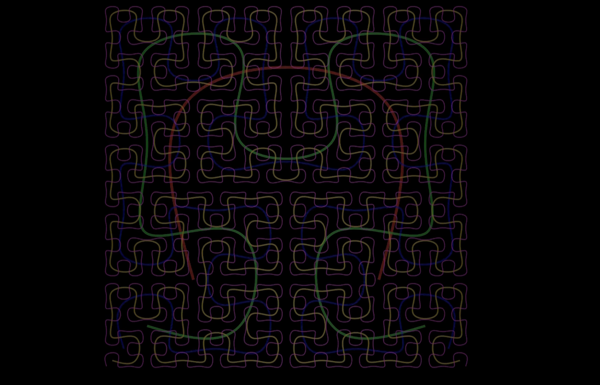

title: “Hilbert Curve Visualization with Manim” format: revealjs editor: visual —
Introduction
The Hilbert Curve algorithm generates a continuous fractal space-filling curve that passes through every point in a grid without crossing itself. It is used to preserve spatial locality, making it valuable in computer graphics, image processing, and data indexing.
Industry Applications: - Database Storage: Multidimensional data indexing - Memory Hierarchy Optimization: Improves cache efficiency and query performance - Geographic Information Systems (GIS): Maps multi-dimensional data to one dimension while maintaining proximity relationships
1. Setting Up the Scene
from manim import *
class HilbertCurve(Scene):
def construct(self):
self.camera.background_color = BLACKScene: Base class for all animations.self.camera.background_color: Sets the background to black for better contrast.
2. Adding a Title
title = Text("Hilbert Curve Visualization", font_size=26, color=BLUE).to_edge(UP * 0.5)
self.play(Write(title))
self.wait(1)
self.play(FadeOut(title), run_time=2)Text(...): Creates a text object.to_edge(...): Moves it to the top.Write(...): Animates drawing the text.FadeOut(...): Fades the title before proceeding.
3. Defining Styles
CURVE_COLORS = ["#FF0000", "#00FF00", "#0000FF", "#FFD700", "#FF00FF", "#00FFFF"]
STROKE_WIDTHS = [6, 5, 4, 3, 2, 1]Each level of the curve gets its own color and decreasing stroke width for visual clarity.
4. Recursive Point Generation
def get_hilbert_points(level, offset=np.array([0, 0, 0]), size=4):
...- Recursive function that constructs points for each level.
- Each quadrant applies transformation and translation based on its position.
- Combines all to build the full curve.
5. Constructing the Curves
max_level = 5
curves = []
for level in range(1, max_level + 1):
points = get_hilbert_points(level)
curve = VMobject(stroke_color=CURVE_COLORS[level-1], stroke_width=STROKE_WIDTHS[level-1])
curve.set_points_smoothly(points)
curves.append(curve)- Generates a list of curves, each for a different level of the Hilbert curve.
VMobjectis used for vector graphics paths.
6. Animating the Transformation
self.play(Create(curves[0]), run_time=5)
for i in range(len(curves)-1):
self.play(Transform(curves[i], curves[i+1]), run_time=4)- Draws the level 1 curve.
- Uses
Transformto morph each level into the next one.
7. Scene Cleanup and Final Curves
self.clear()
for curve in curves:
self.add(curve)- Clears the scene to start a new phase.
- Adds the final versions of each level’s curve to the scene.
8. Rotation Animation
rotations_out = [Rotate(curve, angle=PI) for curve in curves]
rotations_back = [Rotate(curve, angle=-PI) for curve in curves]
self.play(*rotations_out)
self.play(*rotations_back)- Rotates each curve forward and then back.
*rotations_outmeans playing multiple animations in parallel.
9. Dissolve / Fade Out
fade_animations = [FadeOut(curve, run_time=2) for curve in curves]
self.play(*fade_animations, rate_func=lambda t: smooth(t), run_time=3)- Fades out all curves with a smooth effect to close the animation.

Summary
- Recursive generation enables fractal growth.
- Manim makes it easy to animate complex mathematical structures.
- The Hilbert Curve demonstrates how 1D lines can fill 2D space—a beautiful idea in computer graphics and data storage.